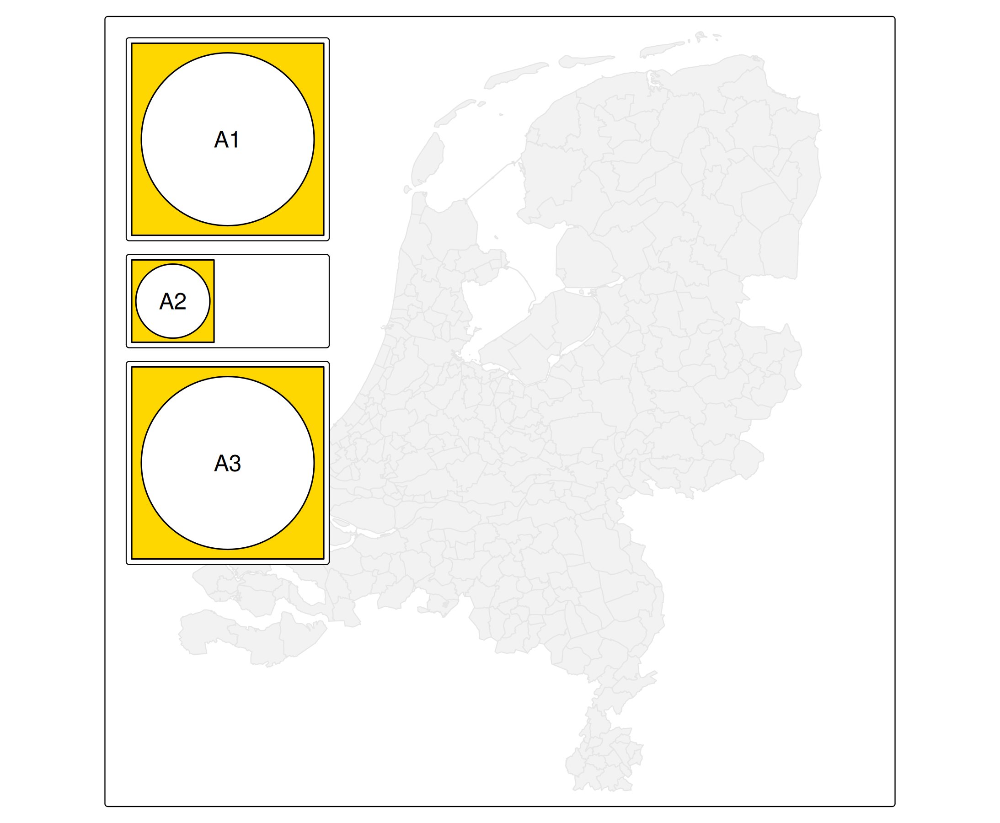
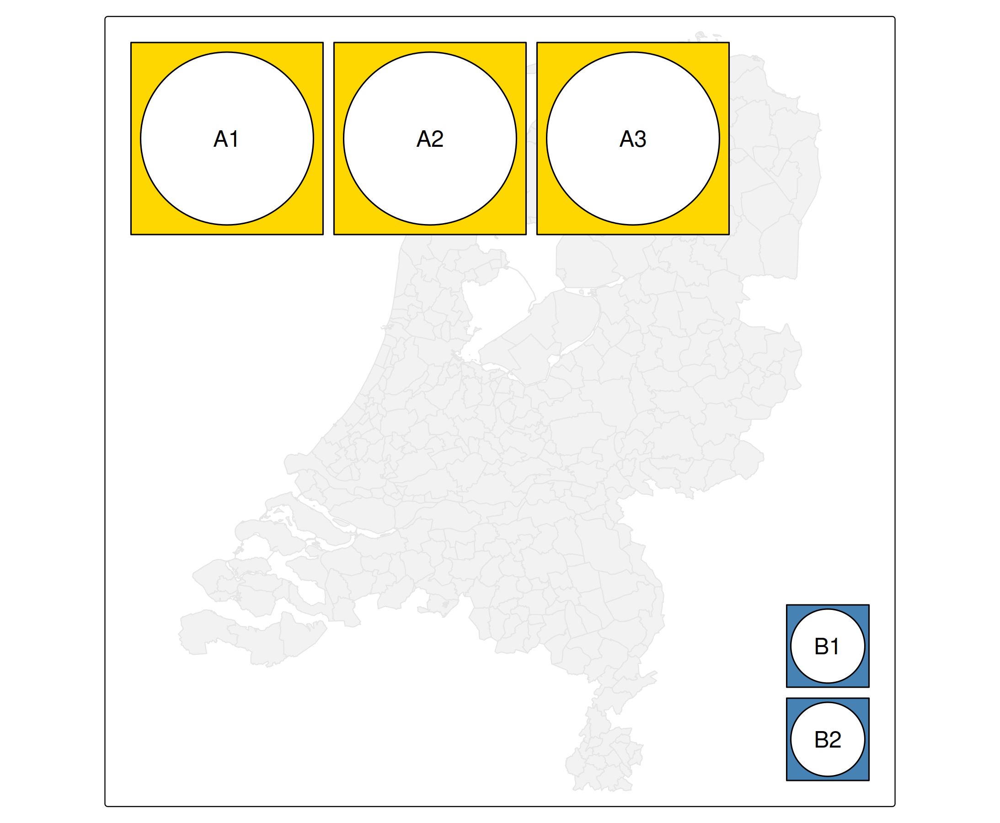
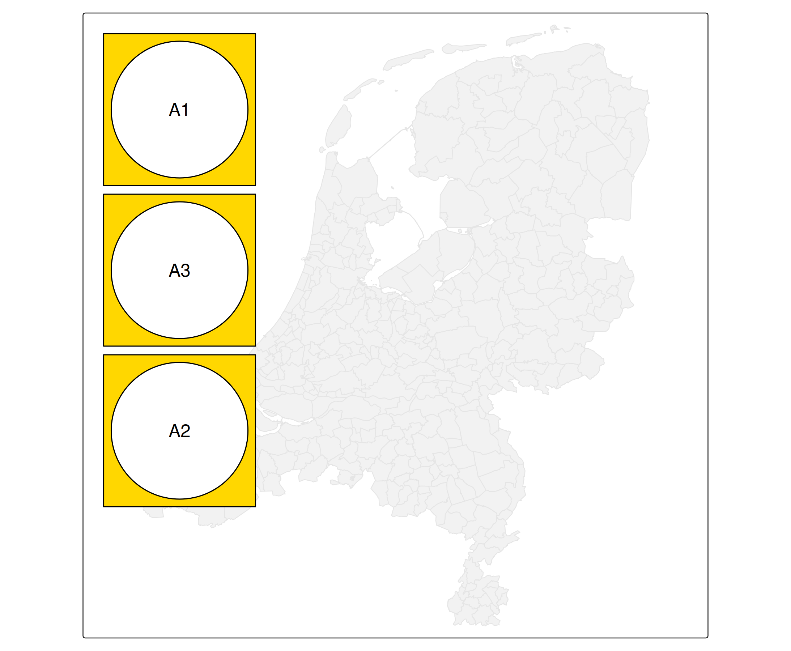

Note: this is written for the upcoming version 4.1
When component share the same position (see vignette about positions), we can specify how they are grouped via tm_comp_group().
We will use a self-made map component, made with the grid package that we show via tm_inset().
g = function(text) grid::gList(
grid::rectGrob(gp=grid::gpar(fill = "gold")),
grid::circleGrob(r = .45),
grid::textGrob(text))
b = function(text) grid::gList(
grid::rectGrob(gp=grid::gpar(fill = "steelblue")),
grid::circleGrob(r = .45),
grid::textGrob(text))Linking components via group_id
tm = tm_shape(NLD_muni) +
tm_polygons("grey95", col = "grey90") +
tm_inset(g("A1"), group_id = "A") +
tm_inset(g("A2"), group_id = "A") +
tm_inset(b("B1"), group_id = "B", height = 3, width = 3) +
tm_inset(g("A3"), group_id = "A") +
tm_inset(b("B2"), group_id = "B", height = 3, width = 3) +
tm_layout(asp = 1)
tm +
tm_comp_group("A", position = tm_pos_in("left", "top")) +
tm_comp_group("B", position = tm_pos_in("right", "bottom"))
Note that the actual grouping is done by position alone: all components with the same position are considered as a group and therefore stacked instead of drawn on top of each other.
The goal of tm_comp_group() is only to specify position and group related arguments (which we discuss in this vignette) directly for multiple components.
In this example components of A and B have the same position and are therefore grouped:
tm +
tm_comp_group("A", position = tm_pos_in("right", "bottom")) +
tm_comp_group("B", position = tm_pos_in("right", "bottom"))
#> [plot mode] legend/component: Some components or legends are too "high" and are
#> therefore rescaled.
#> ℹ Set the tmap option `component.autoscale = FALSE` to disable rescaling.
Stacking
Direction
The stack argument is either "horizontal" or "vertical":
tm +
tm_comp_group("A", position = tm_pos_in("left", "top"), stack = "horizontal") +
tm_comp_group("B", position = tm_pos_in("right", "bottom"), stack = "vertical")Order
The stacking order is by default the same as in which the components appear, but can be changed with the z argument in each component function:
tm_shape(NLD_muni) +
tm_polygons("grey95", col = "grey90") +
tm_inset(g("A1"), group_id = "A", z = 1) +
tm_inset(g("A2"), group_id = "A", z = 3) +
tm_inset(g("A3"), group_id = "A", z = 2) +
tm_layout(asp = 1) +
tm_comp_group("A", position = tm_pos_in("left", "top")) 
Frame
frame_combine
By default frame_combine = TRUE, which means that a single frame is drawn for all components in the same group. This can be disabled with frame_combine = FALSE
tm_shape(NLD_muni) +
tm_polygons("grey95", col = "grey90") +
tm_inset(g("A1"), group_id = "A") +
tm_inset(g("A2"), group_id = "A", width = 3, height = 3) +
tm_inset(g("A3"), group_id = "A") +
tm_layout(asp = 1) +
tm_comp_group("A", position = tm_pos_in("left", "top"), frame_combine = FALSE) 
equalize
Equalize (by default TRUE) means that components made equal in size, that is: the widths in case they are stacked vertically (as in this example), and the heights in case they are stacked horizontally.
tm_shape(NLD_muni) +
tm_polygons("grey95", col = "grey90") +
tm_inset(g("A1"), group_id = "A") +
tm_inset(g("A2"), group_id = "A", width = 3, height = 3) +
tm_inset(g("A3"), group_id = "A") +
tm_layout(asp = 1) +
tm_comp_group("A", position = tm_pos_in("left", "top"), frame_combine = FALSE, equalize = FALSE) Margins
General offset and stack_margin
The offset specifies the distance (in line heights) between the frame and components. By default 0.75 in case the components are drawn inside the frame and pos.h and pos.v are lower case, and 0 otherwise.
The stack_margin specifies the distance between components. In case frame_combine it is 0.5 by default, otherwise 0.
tm_shape(NLD_muni) +
tm_polygons("grey95", col = "grey90") +
tm_inset(g("A1"), group_id = "A") +
tm_inset(g("A2"), group_id = "A", width = 3, height = 3) +
tm_inset(g("A3"), group_id = "A") +
tm_layout(asp = 1) +
tm_comp_group("A", position = tm_pos_in("left", "top"), frame_combine = FALSE, equalize = FALSE, offset = 0, stack_margin = 1)Note: currently both offset and stack_margin are applied for all components for which pos.h and pos.v are specified as characters.
Component specific margins
Each component has its own margins, which are the margins to the frame. These can be specified with a vector of four: bottom, left, top, right.
tm_shape(NLD_muni) +
tm_polygons("grey95", col = "grey90") +
tm_inset(g("A1"), group_id = "A", margins = 0) +
tm_inset(g("A2"), group_id = "A", width = 3, height = 3, margins = 0) +
tm_inset(g("A3"), group_id = "A", margins = 0) +
tm_layout(asp = 1) +
tm_comp_group("A", position = tm_pos_in("left", "top"), frame_combine = T, frame = TRUE, offset = 0, stack_margin = 0)
Alignment
Recall that the align.h and align.v arguments of tm_pos() specify the alignment of the components see vignette about positions).
This can be set for each component individually, or, in case it is the same for all components inside tm_comp_group().
tm_shape(NLD_muni) +
tm_polygons("grey95", col = "grey90") +
tm_inset(g("A1"), group_id = "A") +
tm_inset(g("A2"), group_id = "A", width = 3, height = 3) +
tm_inset(g("A3"), group_id = "A") +
tm_layout(asp = 1) +
tm_comp_group("A", position = tm_pos_in("left", "top", align.h = "right"), frame_combine = FALSE, equalize = FALSE, offset = 0, stack_margin = 0) 
Frame and background color and alpha
tm_shape(NLD_muni) +
tm_polygons("grey75", col = "grey90") +
tm_inset(g("A1"), group_id = "A") +
tm_inset(g("A2"), group_id = "A", width = 3, height = 3) +
tm_inset(g("A3"), group_id = "A") +
tm_layout(asp = 1) +
tm_comp_group("A", position = tm_pos_in("left", "bottom"), frame = TRUE, bg.color = "purple", bg.alpha = 0.5)